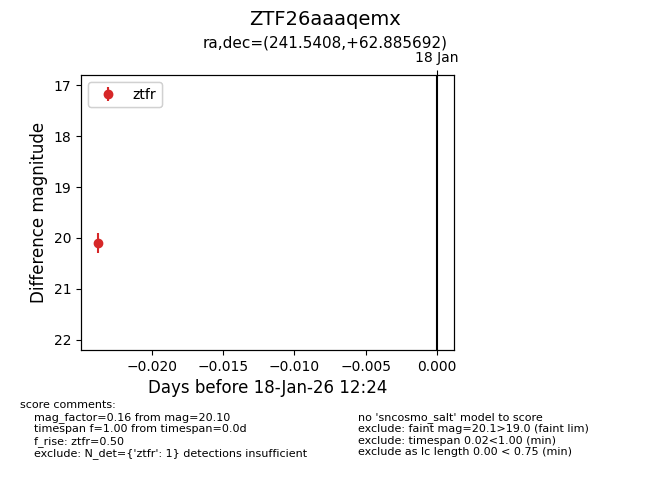
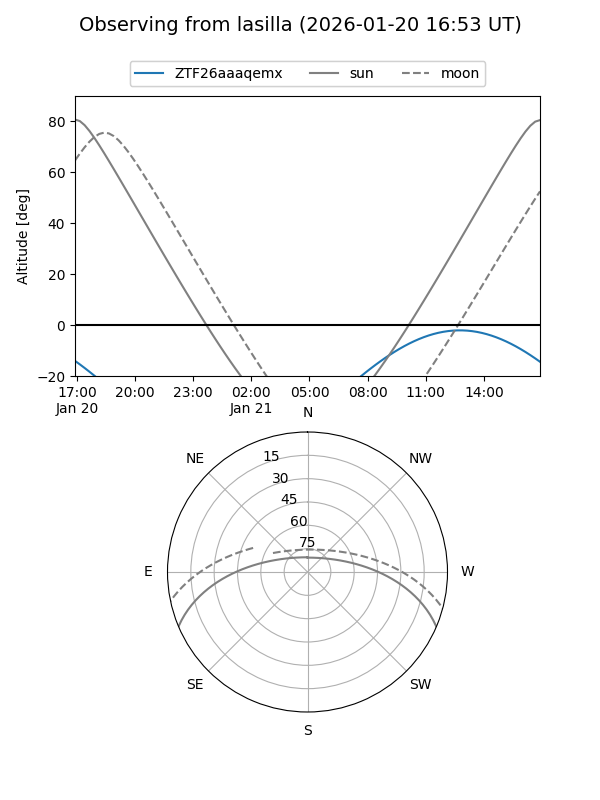
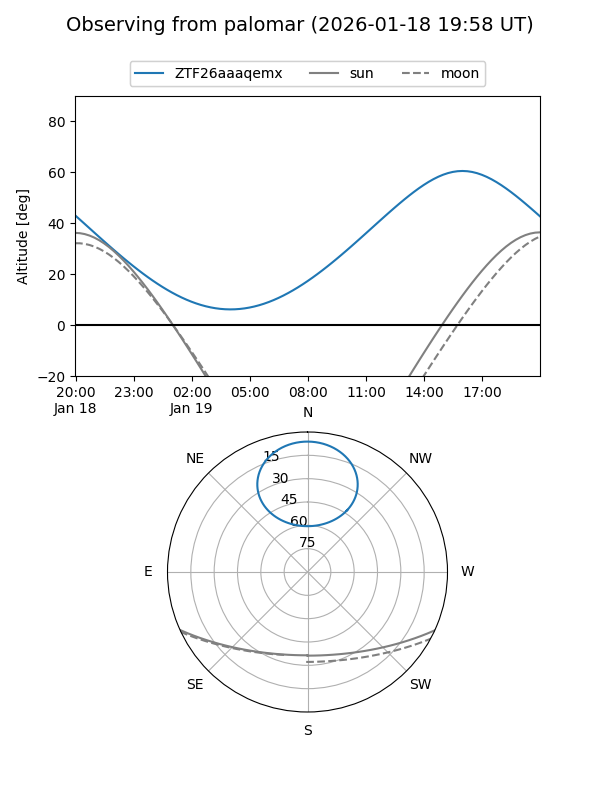
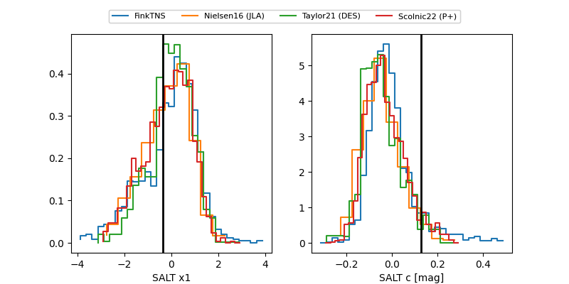

ZTF26aaaqemx
Target ZTF26aaaqemx at 2026-01-20 21:21
Aliases and brokers:
FINK: link
Lasair: link
ALeRCE: link
alt names
ZTF26aaaqemx (ztf,fink_ztf)
Coordinates:
equatorial (ra, dec) = 241.5408,+62.88569
equatorial (HMS+DMS) = 16:06:09.79,+62:53:08.49
galactic (l, b) = (95.3390,+42.35211)
Flags:
Photometry:
last ztfg=20.09, ztfr=20.10
2 ztfg, 1 ztfr detections
Lightcurve

Visibility


Additional plots
